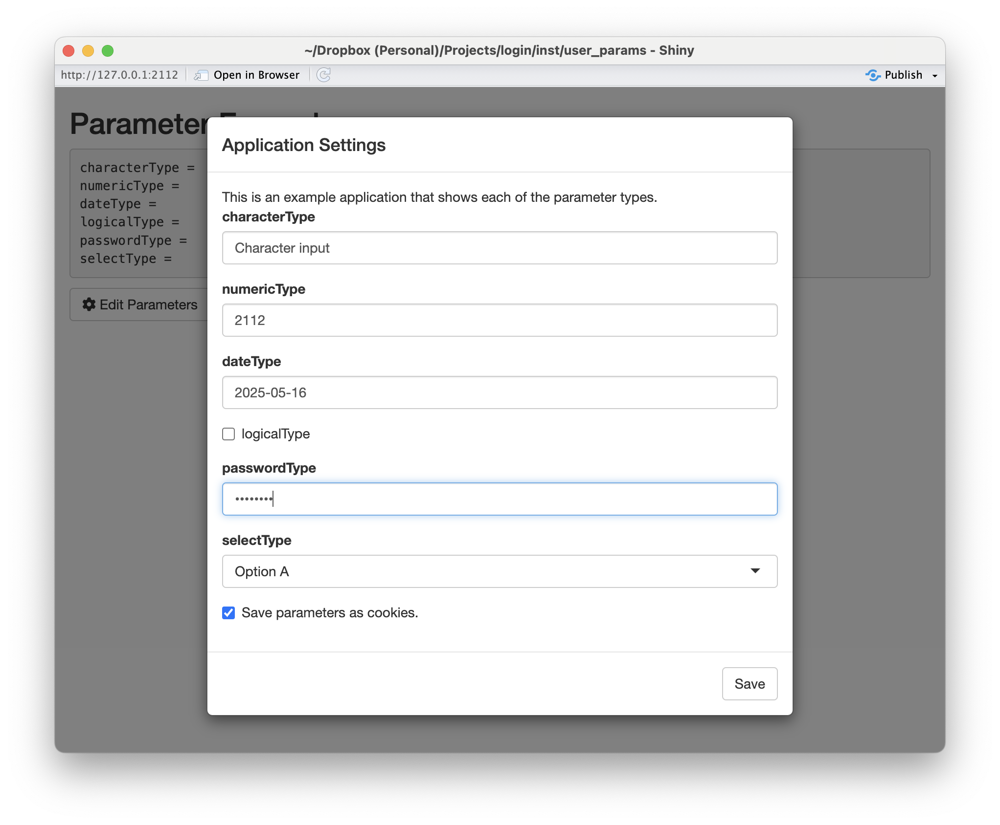
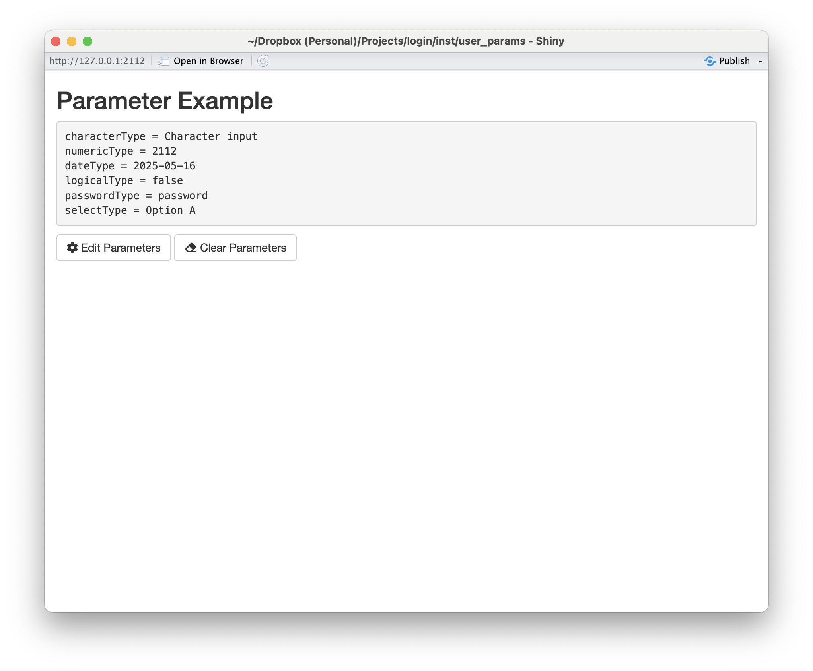

tl;dr
Once the login package is installed, you can run two
demos using the following commands:
shiny::runApp(paste0(find.package('login'), '/user_params/'))
https://github.com/jbryer/login/blob/main/inst/user_params/app.Rshiny::runApp(paste0(find.package('login'), '/data_viewer/'))
https://github.com/jbryer/login/blob/main/inst/data_viewer/app.R
Introduction
Shiny is an incredible tool for interactive data analysis. For the vast majority of Shiny applications I have developed I make a choice regarding the default state of the application, but provide plenty of options for the user to change and/or customize the analysis. However, there are situations where the application would be better if the user was required to input certain parameters. Conceptually I often think of Shiny applications as an interactive version of a function, a function with many parameters, some of which the user needs to define the default parameters. This vignette describes a Shiny module where a given set of parameters must be set before the user engages with the main Shiny application, and those settings can be optionally saved as cookies to be used across sessions. Even though this is the main motivation for this Shiny module, it can also be used as a framework for saving user preferences where saving state on the Shiny server is not possible (e.g. when deployed to www.shinyapps.io).
The user parameter module is part of the login R
package. The goal is to present the user with a set of parameters in a
modal dialog as the Shiny application loads. The primary interface is
through the userParamServer() function that can be included
in the server code. The following is a basic example.
params <- userParamServer(
id = 'example',
params = c('name', 'email'),
param_labels = c('Your Name:', 'Email Address:'),
param_types = c('character', 'character'),
intro_message = 'This is an example application that asks the user for two parameters.'),
validator = my_validatorLike all Shiny
modules, the id parameter is a unique identifier
connected the server logic to the UI components. The params
parameter is a character vector for the names of the parameters users
need to input. These are the only two required parameters. By default
all the parameters will assume to be characters using the
shiny::textInput() function. However, the module supports
multiple input types including:
-
character- String values -
password- String values but will use theshiny::passwordInputinstead. -
date- Date values -
numeric- Numeric values -
logical- Logical values, will be displayed as a checkbox. -
file- File uploads (note the value will be the path to where the file is uploaded) -
select- Drop down selection. This type requires additional information vis-à-vis theinput_paramsparameter discussed latter.
The above will present the user with a modal dialog immediately when the Shiny application starts up as depicted below.

The values can then be retrieved from the params object,
which is depicted in the figure below.

The userParamServer() function returns a
shiny::reactiveValues() object. As a result, any code that
uses these values should automatically be updated if the values
change.
There are two UI components, specifically the
showParamButton() and clearParamButton()
buttons. The former will display the modal dialog allowing the user to
change the values. The latter will clear all the values set (including
cookies if enabled).
Cookies
It is possible to save the user’s parameter values across session by
saving them to cookies (as long as allow_cookies = TRUE).
If the allow_cookies parameter is TRUE, the
user can still opt to not save the values as cookies. It is recommend to
set the cookie_password value so that the cookie values are
encrypted. This feature uses the cookies R package and requires
that cookies::cookie_dependency() is place somewhere in the
Shiny UI.
Full Shiny Demo
The figures above are from the Shiny application provided below.
library(shiny)
library(login)
library(cookies)
#' Simple email validator.
#' @param x string to test.
#' @return TRUE if the string is a valid email address.
is_valid_email <- function(x) {
grepl("\\<[A-Z0-9._%+-]+@[A-Z0-9.-]+\\.[A-Z]{2,}\\>", as.character(x), ignore.case=TRUE)
}
#' Custom validator function that also checks if the `email` field is a valid email address.
my_validator <- function(values, types) {
spv <- simple_parameter_validator(values)
if(!is.logical(spv)) {
return(spv)
} else {
if(is_valid_email(values[['email']])) {
return(TRUE)
} else {
return(paste0(values[['email']], ' is not a valid email address.'))
}
}
return(TRUE)
}
ui <- shiny::fluidPage(
cookies::cookie_dependency(), # Necessary to save/get cookies
shiny::titlePanel('Parameter Example'),
shiny::verbatimTextOutput('param_values'),
showParamButton('example'),
clearParamButton('example')
)
server <- function(input, output) {
params <- userParamServer(
id = 'example',
validator = my_validator,
params = c('name', 'email'),
param_labels = c('Your Name:', 'Email Address:'),
param_types = c('character', 'character'),
intro_message = 'This is an example application that asks the user for two parameters.')
output$param_values <- shiny::renderText({
txt <- character()
for(i in names(params)) {
txt <- paste0(txt, i, ' = ', params[[i]], '\n')
}
return(txt)
})
}
shiny::shinyApp(ui = ui, server = server, options = list(port = 2112))Validation
The validator parameter speicies a validation function
to ensure the parameters entered by the user are valid. The default
value of simple_parameter_validator() simply ensures that
values have been entered. The Shiny application above extends this by
also checking to see if the email address appears to be valid.
Validations functions must adhere to the following:
It must take two parameters:
valueswhich is a character vector the user has entered andtypeswhich is a character vector of the types described above.Return
TRUEif the validaiton passes OR a character string describing why the validation failed. This message will be displayed to the user.
If the validation function returns anything other than
TRUE the modal dialog will be displayed.
Customizing the Shiny inputs
The input_params parameter allows for further
customization of the various Shiny inputs. In particular, you can put
any other shiny::xxxInput parameters into a list. For
select input types the choices parameter is
required. The following template provides the basic structure:
File Input Example
The following Shiny application demonstrates how to use the file upload and drop down selection features.
library(shiny)
library(login)
library(cookies)
#' Custom validator function that also checks if the `file` field is a valid CSV file.
my_validator <- function(values, types) {
spv <- simple_parameter_validator(values)
if(!is.logical(spv)) {
return(spv)
} else {
if(!file.exists(values$file)) {
return('File does not exists. Try uploading again.')
} else if(!tools::file_ext(values$file) %in% c('csv', 'xslx')) {
return('Only CSV and XLSX files supported.')
}
}
return(TRUE)
}
ui <- shiny::fluidPage(
cookies::cookie_dependency(), # Necessary to save/get cookies
shiny::titlePanel('Data Viewer'),
showParamButton('csvviewer'),
clearParamButton('csvviewer'),
DT::DTOutput('data_table')
)
server <- function(input, output) {
params <- userParamServer(
id = 'csvviewer',
validator = my_validator,
params = c('filetype', 'file'),
param_labels = c('File type', 'URL to a CSV file:'),
input_params = list("filetype" = list("choices" = c("", "CSV" = "csv", "Excel" = "xlsx"))),
param_types = c('select', 'file'),
intro_message = 'This application will view a spreadsheet as a data table.')
output$data_table <- DT::renderDT({
df <- data.frame()
if(file.exists(params$file)) {
if(params$filetype == 'csv') {
df <- read.csv(params$file)
} else if(params$filetype == 'xlsx') {
df <- readxl::read_excel(params$file)
}
}
return(df)
})
}
shiny::shinyApp(ui = ui, server = server, options = list(port = 2112))